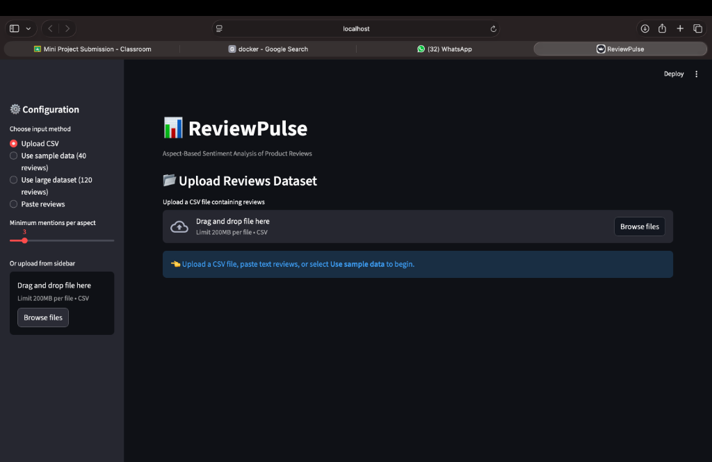
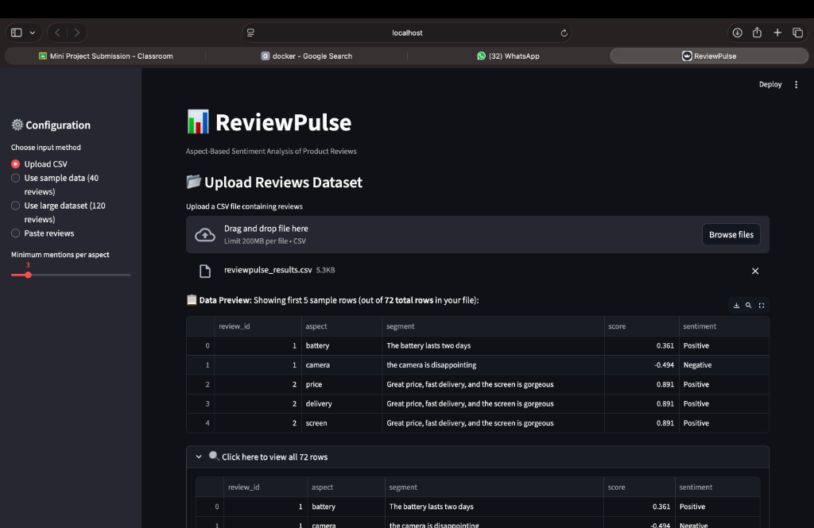
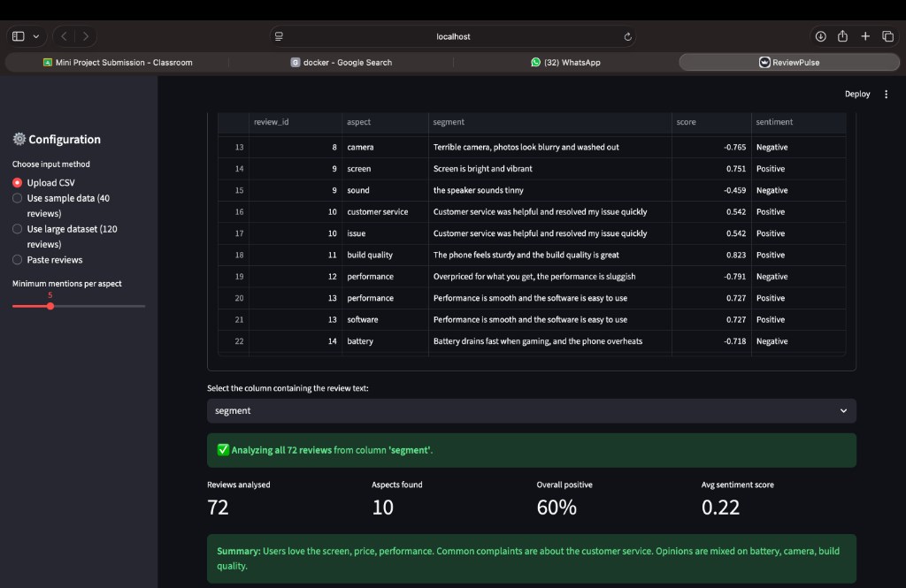
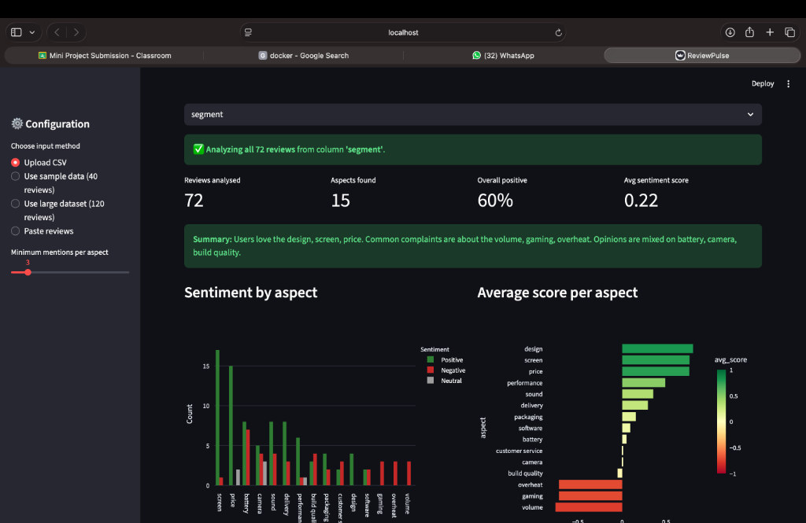
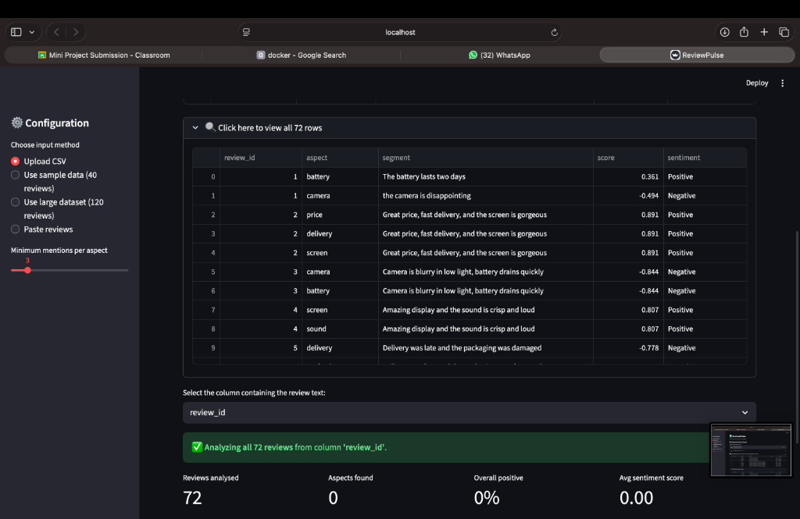

Aspect-Based Sentiment Analysis of Product Reviews
Decomposing contradictory consumer feedback into granular feature intelligence through contrastive clause division, spaCy POS extraction, and domain-augmented lexicon scoring.
Real-World Customer Review on Amazon / Flipkart:
"The battery easily lasts two days, but the camera is blurry in low light."
Averages words across the entire review: Positive battery (+0.5) + Negative camera (-0.5) = 0.00 (Neutral / 3 Stars).
Segments clauses across contrastive boundaries and evaluates each attribute independently:
Shifting the paradigm from document-level binary labeling to fine-grained, component-level consumer intelligence.
Splits sentences at contrastive conjunctions (but, however, while) to isolate conflicting opinions.
Employs spaCy POS tagging & lemmatization to extract nouns and normalize synonyms (display → screen).
Computes localized clause polarity with VADER augmented by custom tech weights (blurry, overheats).
Assigns verdicts (Good, Mixed, Poor) and generates natural language pros/cons summaries.
CSV Upload (200MB limit)
Auto-encoding detection
Direct text buffer
clean_text() URL/HTML strip
Sentence tokenization
CONTRAST_SPLIT regex
spaCy en_core_web_sm
POS NOUN/PROPN filter
Synonym normalization
VADER Compound Score
Tech Lexicon augmentation
Threshold filter
Streamlit / Vercel Web UI
Plotly / Chart.js graphs
CSV & PDF Exporter
Identifies coordinating and subordinating contrastive conjunctions marking an explicit polarity shift.
Result: High-resolution attribution where neither feature cancels the other out.
General sentiment dictionaries (TextBlob, raw VADER) misclassify technical hardware adjectives. ReviewPulse injects an electronics domain lexicon:
Thermal throttling
Lens / photo noise
UI / frame drops
Speaker distortion
Chassis build quality
OLED / display fidelity
Processor speed
Longevity & reliability

Drag-and-drop CSV box (200MB limit), data source selector, and sensitivity frequency slider.

72 rows parsed; intelligent dropdown allows selecting the target text column (segment).

Discovered top 10 aspects, 60% positive overall ratio, and row-by-row quote verification.

Stacked sentiment volume distribution and ranked horizontal polarity charts in Plotly.

When a user inadvertently maps a numeric ID column (review_id) as the text input, ReviewPulse processes all 72 rows without throwing exceptions or crashing.
Because numbers lack grammatical nouns and sentiment vocabulary, the engine reports 0 Aspects Found and 0.00 Avg Score. It refuses to invent fake attributes.
| Aspect | Pos | Neg | Neu | Mentions | Avg Score | Verdict | Actionable Business Diagnostic |
|---|---|---|---|---|---|---|---|
| screen | 8 | 1 | 0 | 9 | +0.669 | Good | Major selling point; crisp OLED praised. |
| price | 6 | 0 | 1 | 7 | +0.736 | Good | Competitive value proposition confirmed. |
| battery | 5 | 4 | 0 | 9 | +0.065 | Mixed | 2-day standby, but heavy gaming drain. |
| camera | 3 | 3 | 2 | 8 | -0.047 | Mixed | Great daylight; blurry low-light photos. |
| customer service | 1 | 2 | 0 | 3 | -0.004 | Poor | Unresponsive email and slow RMA replacement. |
| software | 1 | 2 | 0 | 3 | -0.119 | Poor | UI lag and bloatware post-OTA updates. |
| Evaluation Dimension | ReviewPulse (Hybrid Classical NLP) | Cloud LLM (e.g. GPT-4) |
|---|---|---|
| Operating Cost | $0.00 (Zero API bills, free forever) | Expensive per-token API costs |
| Inference Latency | < 0.5s per batch on standard CPU | 3 – 10 seconds via remote cloud API |
| Data Privacy | 100% Local (customer reviews never leave machine) | Customer feedback transmitted to third party |
| Reproducibility | Deterministic (100% exact repeatability) | Stochastic (temperature-dependent variance) |
| Hallucination Risk | 0% (Strict grammatical and lexical rules) | Prone to synthetic feature hallucination |
ReviewPulse transforms unstructured customer feedback into actionable engineering priorities.